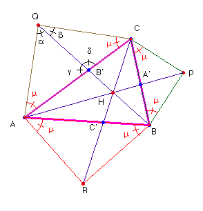
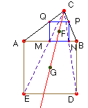

Problema Nº 93.- Dado un triángulo ABC, se inscribe en él un cuadrado uno de cuyos lados se apoye en el lado BC. Sea A1 el centro de este cuadrado. De igual modo se construyen cuadrados con lados apoyados en AC y en AB y cuyos centros son los puntos B1 y C1 respectivamente. Probar que las rectas AA1, BB1 y CC1 son concurrentes.
(Enunciado tomado del artículo Otros problemas de la I.M.O. de Washington, 2001 publicado en la Gaceta de la Real Sociedad Matemática Española, pág. 708-709, septiembre – diciembre de 2002)
Solución de Saturnino Campo Ruiz, profesor de Matemáticas del I.E.S. Fray Luis de León (Salamanca) (10 de mayo de 2003) - En la figura adjunta podemos observar como el centro F del cuadrado inscrito en ABC, y el centro G del construido exteriormente, tomando como lado AB están alineados; es evidente, pues estos cuadrados son homotéticos, siendo C el centro de la homotecia.

De este modo transformamos el problema inicial en el de probar que las rectas que unen los vértices del triángulo ABC con los centros de los cuadrados construidos exteriormente sobre cada lado son concurrentes.Cada lado del triángulo determina con el centro del cuadrado adjunto un triángulo rectángulo isósceles. De forma más general que lo pedido por este problema vamos a sustituir estos triángulos por triángulos isósceles semejantes. Demostraremos que, en este caso, las rectas correspondientes también son concurrentes.
Para probar la concurrencia de las rectas AP, BQ y CR haremos uso del teorema de Ceva.
Vamos a calcular el valor del cociente . Las áreas de los triángulos con igual altura son proporcionales a las bases, por tanto, el cociente anterior es igual a la razón de las áreas de los triángulos B’QC y B’QA.
Si tomamos como bases los lados QC y QA respectivamente, tendremos: Área(B’QA) = ½· QB’· QA· sena; y Área(B’QC) = ½· QB’· QC ·sen b; pero como QA = QC, se tiene, en resumen:
En los triángulos QBA y QBC con QB como lado común, aplicando el teorema de los senos tenemos: y ; sustituyendo estas expresiones en la razón entre las áreas resulta, finalmente: . Permutando convenientemente las letras A, B y C, se obtienen:

y . El producto de estas tres razones es:Casos particulares: Si m = 45º, como en la figura, H es el punto de Vecten.
Si m = 60º, el punto de concurrencia H es el primer punto de Fermat.
Si m = , se demuestra que las rectas que unen un vértice de un triángulo con el centro del polígono regular de n lados construido exteriormente sobre el lado opuesto, son concurrentes.